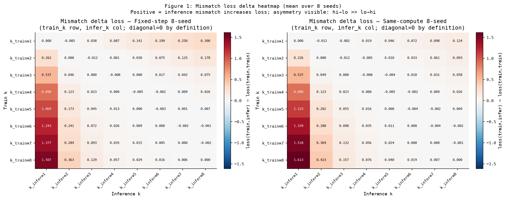
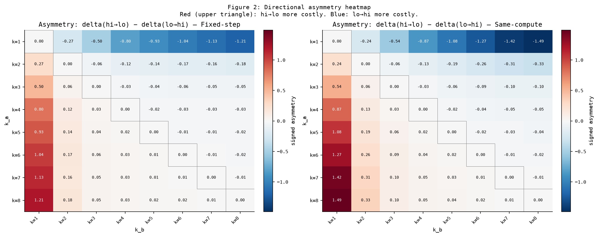
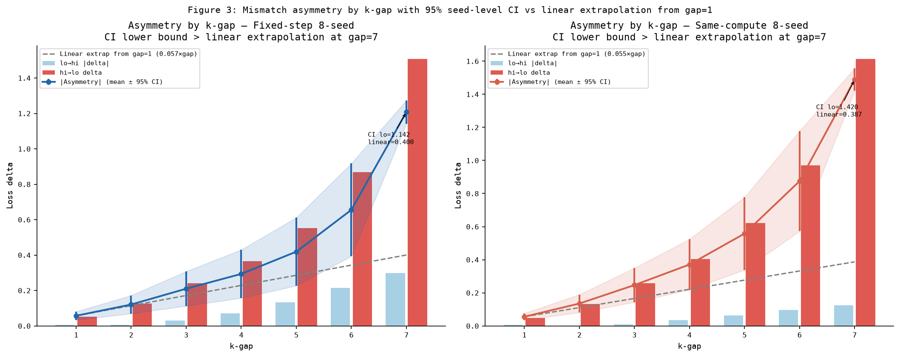
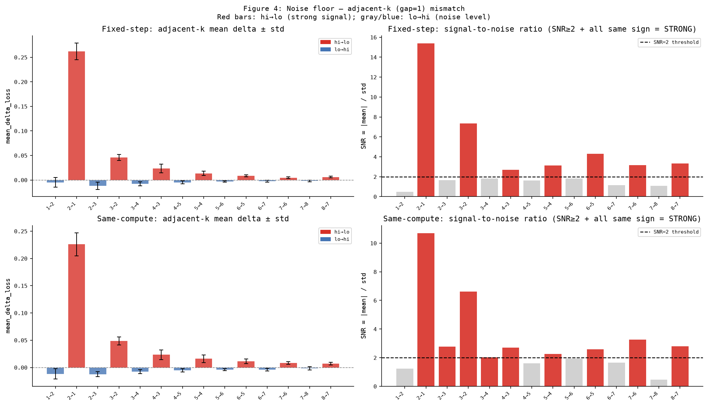
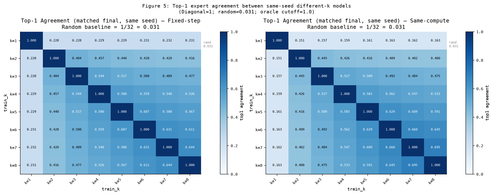
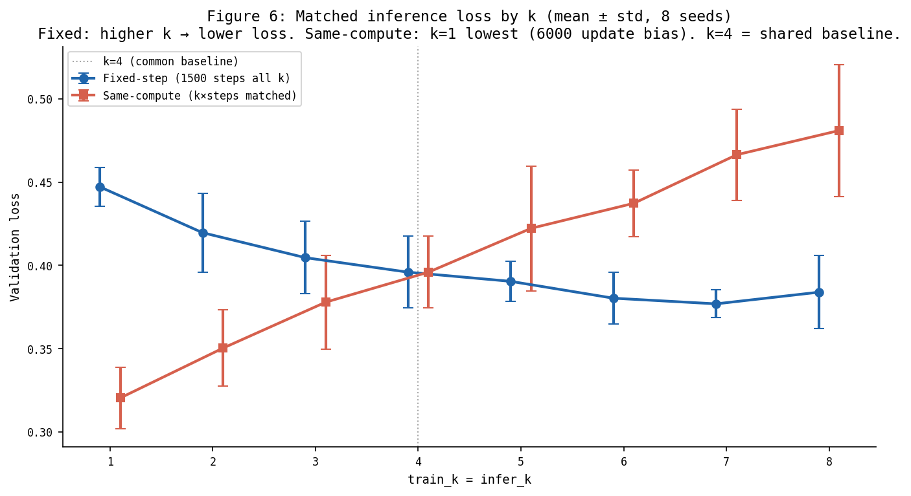
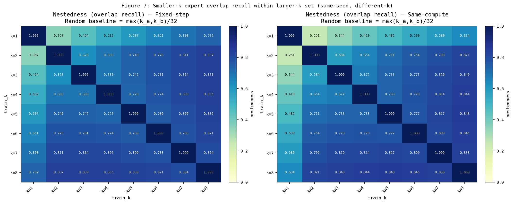
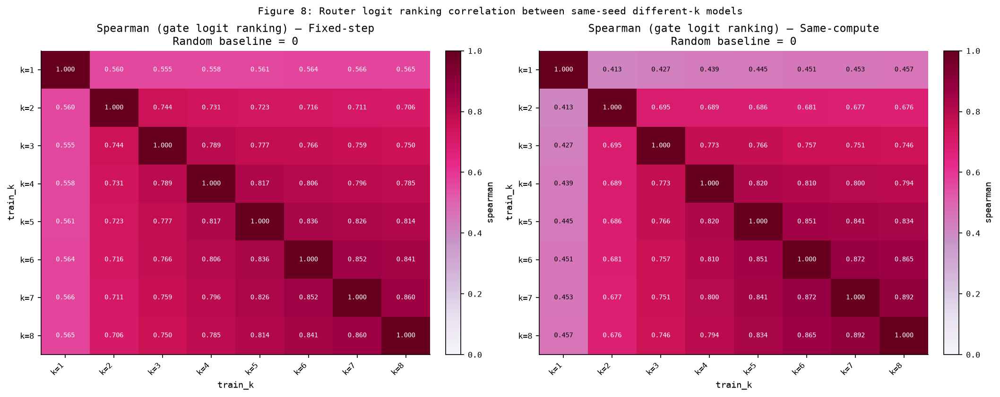
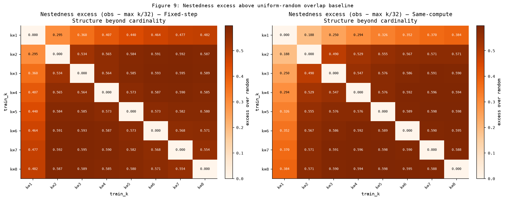
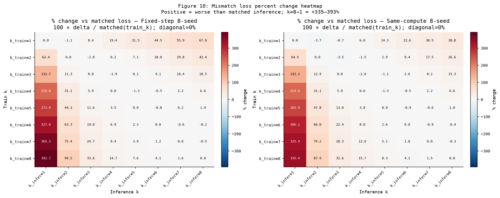

MoE Top-k Routing 실험
Train-time k vs Inference-time k — Sparse32 TinyMoE, 8 seeds, two-budget
Figure 1 · Mismatch Δloss

읽는 법: 행=train_k, 열=infer_k. 빨강=양수(불일치로 손실 증가), 파랑=음수. 대각선=0(matched baseline). 왼쪽 열 전체가 짙은 빨강 → hi→lo 비용이 크다.
Figure 2 · Directional Asymmetry

읽는 법: δ(hi→lo) − δ(lo→hi). 빨강(상삼각) = hi→lo가 더 비싸다. k=8→k=1이 가장 짙다. 두 budget에서 동일 패턴.
Figure 3 · Asymmetry by K-gap (95% CI)

읽는 법: 빨강 막대=hi→lo 평균, 파랑 막대=lo→hi 절댓값. 파란 선+CI=|asymmetry|. 회색 점선=gap=1 선형 외삽. gap=7에서 CI lower bound가 선형 예측을 명확히 초과.
Figure 4 · Noise Floor (gap=1)

읽는 법: 빨강=hi→lo, 파랑=lo→hi. SNR 차트에서 점선(SNR=2) 위 빨강만 STRONG. lo→hi는 대부분 noise level.
Figure 5 · Top-1 Agreement

읽는 법: 색이 진할수록 top-1 expert 일치율 ↑. 하단 우측(high-k 간) 진함, k=1 행/열 옅음. random=0.031, oracle=1.0.
Figure 6 · Matched Loss by k

읽는 법: 파란=fixed-step(k↑→loss↓), 빨강=same-compute(k=1 최저). k=4 교차점. k=8 matched(0.384) < k=1(0.447) 이지만 k=8→1 mismatch +1.507.
Figure 7 · Nestedness (Overlap Recall)

읽는 법: smaller-k expert overlap recall within larger-k set. random baseline = max(k)/32. excess 0.19–0.59.
Figure 8 · Spearman (Gate Logit Ranking)

읽는 법: router logit ranking 상관. random=0, oracle=1.0. 인접 k (7-8): ~0.86–0.89. k=1 관련: ~0.41–0.56 — top1보다 ranking 보존 ↑.
Figure 9 · Nestedness Excess

읽는 법: obs − max(k)/32. cardinality 효과 제거 후 구조 신호. 4-8 pair excess ~0.59.
Figure 10 · Mismatch Loss Percent Change

읽는 법: 100 × Δloss / matched loss(train_k). k=8→1은 fixed-step +392.67%, same-compute +335.36%. matched loss가 작은 행에서는 비율이 커질 수 있으므로 raw Δloss와 함께 읽는다.
Evidence Summary
| Claim | 강도 | 핵심 수치 |
|---|---|---|
| hi→lo > lo→hi | 가장 강함 | 8/8 unanimity |
| k=8→1 mismatch | 강함 | +1.507 / +1.613 |
| routing priority 재구성 | 강함 | oracle gap 0.30–0.85 |
| Spearman 7-8 | 강함 | 0.86–0.89 ranking 보존 |
Takeaway
High-k로 학습한 MoE를 low-k로 추론(hi→lo)하면 validation loss가 크게 악화된다.
k=8 matched(0.384) < k=1(0.447) 이지만 k=8→1 mismatch +1.507. 두 budget, 8 seeds 재현.